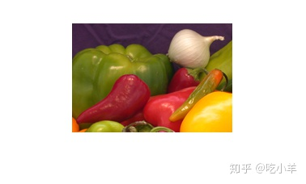
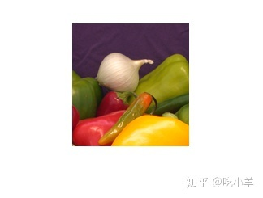
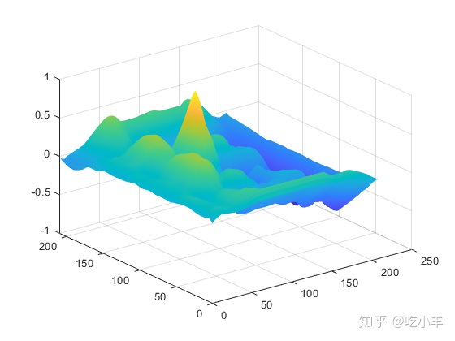
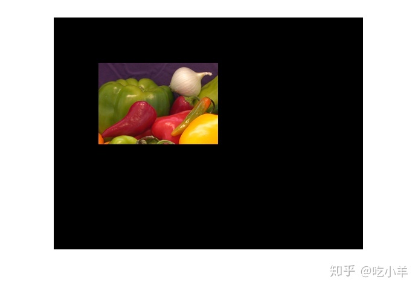
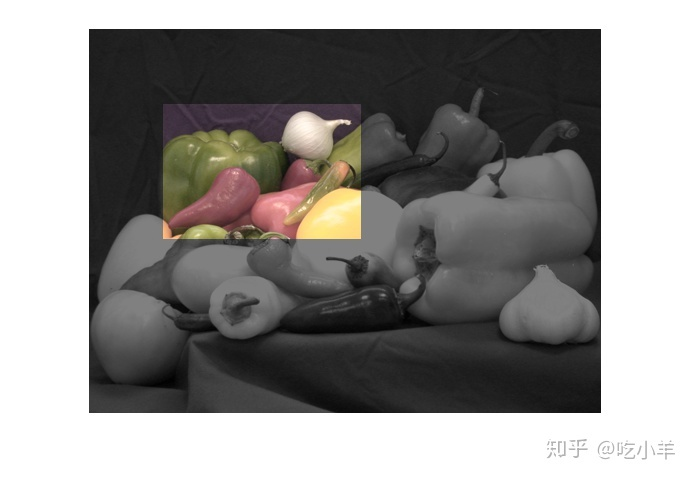

Home
本示例说明如何在较大的图像中查找模板图像。有时一个图像是另一个图像的子集。归一化互相关可用于确定如何通过平移图像之一来对齐或配准图像。
步骤1：读取图片
onion = imread('onion.png');
peppers = imread('peppers.png');
imshow(onion)

figure, imshow(peppers)

步骤2：选择每个图像的子区域
选择相似的区域很重要。图像sub_onion将是模板，并且必须小于图像sub_peppers。您可以使用下面的非交互式脚本或交互式脚本获取这些子区域。
% non-interactively
rect_onion = [111 33 65 58];
rect_peppers = [163 47 143 151];
sub_onion = imcrop(onion,rect_onion);
sub_peppers = imcrop(peppers,rect_peppers);
% OR
% interactively
%[sub_onion,rect_onion] = imcrop(onion); % choose the pepper below the onion
%[sub_peppers,rect_peppers] = imcrop(peppers); % choose the whole onion
% display sub images
figure, imshow(sub_onion)
figure, imshow(sub_peppers)

步骤3：进行归一化互相关并找到峰值坐标
计算归一化互相关并将其显示为表面图。互相关矩阵的峰值出现在子图像最佳相关的位置。normxcorr2仅适用于灰度图像，因此我们将每个子图像的红色平面传递给它。
c = normxcorr2(sub_onion(:,:,1),sub_peppers(:,:,1)); figure, surf(c), shading flat

步骤4：找出图像之间的总偏移量
图像之间的总偏移或平移取决于互相关矩阵中峰的位置，以及子图像的大小和位置。
% offset found by correlation
[max_c, imax] = max(abs(c(:)));
[ypeak, xpeak] = ind2sub(size(c),imax(1));
corr_offset = [(xpeak-size(sub_onion,2))
(ypeak-size(sub_onion,1))];
% relative offset of position of subimages
rect_offset = [(rect_peppers(1)-rect_onion(1))
(rect_peppers(2)-rect_onion(2))];
% total offset
offset = corr_offset + rect_offset;
xoffset = offset(1);
yoffset = offset(2);
步骤5：查看Onion图像是从Peppers图像中提取的吗
找出onion在peppers所处的位置。
xbegin = round(xoffset+1);
xend = round(xoffset+ size(onion,2));
ybegin = round(yoffset+1);
yend = round(yoffset+size(onion,1));
% extract region from peppers and compare to onion
extracted_onion = peppers(ybegin:yend,xbegin:xend,:);
if isequal(onion,extracted_onion)
disp('onion.png was extracted from peppers.png')
end
onion.png was extracted from peppers.png
步骤6：将Onion图像填充到Peppers图像的大小
使用上面确定的偏移量将onion图像填充到peppers上面。
recovered_onion = uint8(zeros(size(peppers))); recovered_onion(ybegin:yend,xbegin:xend,:) = onion; figure, imshow(recovered_onion)

步骤7：使用Alpha混合一起显示图像
使用Alpha混合peppers将recovered_onion图像的一个平面与图像一起显示。
figure, imshowpair(peppers(:,:,1),recovered_onion,'blend')

======================================================================
我的测试结果及程序
下面是我测试的代码：

注：本文根据MATLAB官网内容修改而成。